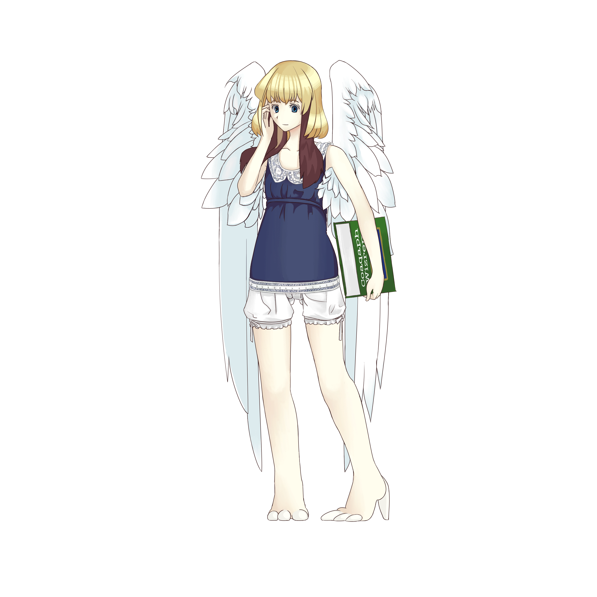
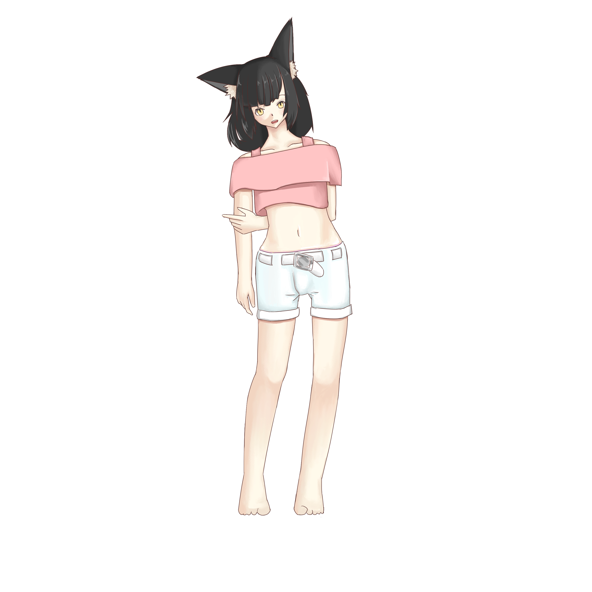

登場人物紹介¶
パスベルス¶
パスベルス・ユスベアン(Pasberth Usbean)。1919年14月20日生まれ。 1921年くらいまではベアンシスのパストラフェに住んでいた。ところが 複雑な事情から、正統ルニアのアンダルフトでアルサメルに拾われると、 そのあとずっとアルサメルに養われて暮らしていた。 正統ルニアの奴隷に関する法律 に基づいて、 正統ルニア国奴 として登録されているおかげで、 ルニア各国における在留資格を認められている。ただし、やはり正統ルニア国奴であるので、 公共の場では首輪の着用を義務付けられている。
ちなみに、ユスベアンという名字は、もともとではなく、彼女がフィームと知り合った時につけられた。 アクトニアではもともと名字を継承する習慣はないが、ルニアでは、記名の際にたいてい姓名を求められて、 不便なので、さしあたり姓の項目にはユサクトンと書いておく というアクトン人の習慣にいたく感激したのだ。

フィーム¶
フィーム・ユサクトン(Feem Usactoon)。1917年11月11日生まれ。 アクトニアから来たアクトン人の女の子。パスベルスの親友。 アクトニアでは、6歳を迎えた子供には、ルニアでちょうど1年間 修行させる習わしがある。そうした理由で、1923年、フィームは聖ルニアを訪れて、 どうにかこうにか1人で暮らしていた。そこで人手を探していたアルサメルと出会い、 そのあと1年間、アルサメルに雇われることとなった。また、そこでアルサメルと 行動をともにしていたパスベルスと出会って、同年代でもあったので意気投合した。
